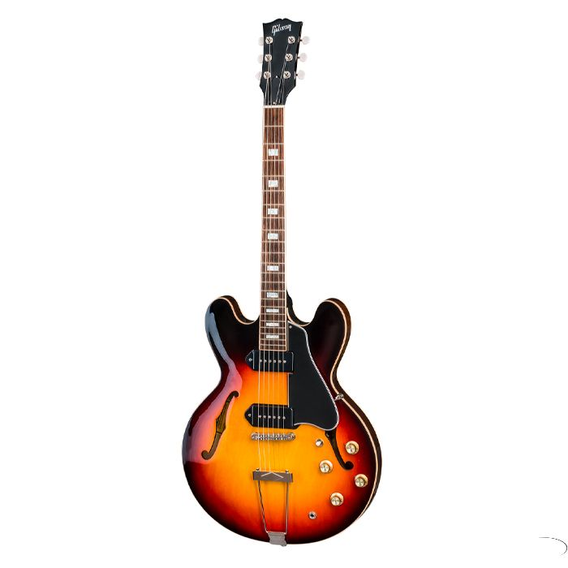
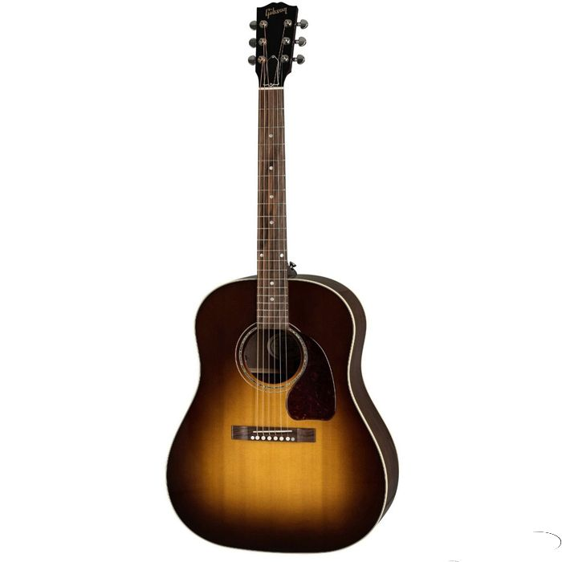

Cuando tenia 14 años, mi madre me compro mi primer guitarra acústica fue una sorpresa enorme porque no sabía que me la darían, si quería una hace tiempo, más por la idea de aprender a tocar y tener la capacidad de interpretar canciones. Con ella hice mis primeros acordes e intentos de punteo, aún la tengo y la uso para practicar.
Ya después de haber aprendido un poco más y estar involucrado en la música en mi tiempo libre, apenas tuve la oportunidad me compre una guitarra electroacústica esta si salió de mi bolsillo y la deseaba hace tiempo, para darle más color a mis interpretaciones y lograr soltar mis dedos.
Actualmente soy guitarrista ritmico en grupo de Reggae y tengo la meta de comprar una guitarra eléctrica para finalmente ponerme en la tarea de aprender a interpretar acordes y punteos de alto nivel.
| Guitarra | Descripción | Foto |
|---|---|---|
| Guitarra Eléctrica Gibson ES-330 2018 | Esta impresionante guitarra incorpora actualizaciones como el puente ABR-1 con selletas de titanio y circuito MTC cableado a mano emparejado con las MHS P-90s libre de ruidos. Gracias a los clavijeros vintage de forma oval y el cordal Thinline Trapeze tienes un look puramente clásico. Por sus dimensiones de mástil y ahuecado total, es arsenal perfecto para bluesers y jazz-cats... |  |
| Guitarra Electroacústica Gibson Hummingbird Heritage | La “tocabilidad” de la Hummingbird es notable gracias a su diapasón de palo de rosa con bordes contorneados que la hacen súper confortable al tacto. Todo luce y se siente tan bien como suena gracias a su logrado acabado aplicado a mano en nitrocelulosa color Heritage Cherry Sunburst. La Hummingbird lleva una roseta de doble anillo, incrustaciones en forma de paralelogramo en el diapasón como marcadores de posición, cenefa combinada en la tapa y en el fondo y el pickguard con el grabado correspondiente a este legendario modelo. La guitarra viene protegida por su estuche rígido Gibson de plush azul, acompañada por el manual del usuario y asegurada con la garantía dorada de Gibson para protegerlo en caso de cualquier eventualidad y ayudarlo a que también usted se convierta en una verdadera leyenda de la guitarra. | |
| Guitarra Acústica Gibson J-15 2019 | La guitarra Gibson J-15 está hecha a mano con maderas de tono sólido, cubierta de abeto Sitka, fondo y laterales de nogal y cuello de arce. Construida por maestros artesanos usando los mismos métodos que todos los modelos acústicos de Gibson, esta J-15 tiene una unión de cuello y cuerpo de cola de milano ajustada a mano y asegurada con pegamento de piel. Acabada con un sistema de recogida de elementos LR Baggs. Disponible en acabado Antique Natural y Walnut Burst. |  |